כל אזור בטיוטה שאני מציע לגעת בו: צילום של מה שקיים היום, הטקסט הקיים מילה במילה, והטקסט המוצע במקומו. הכול כאן הצעה. שום דבר לא שונה באתר.
נבדק
19.11.2026
אזורים
40
שורות טקסט
150
מחליפים
63
מוסיפים
21
מחכים לנתון
27
דורשים אישור מיוחד
14
נשארים
21
עודכן: אתר כללי עם מותג כנישה
המסמך עבר על כל אזור שהיה קשור לכוס הרוח והפך אותו לכללי. כל דף הבית (H1–H11), הקולקציה, הפוטר ותיאורי החיפוש מנוסחים עכשיו ברמת המותג.
מה השתנה בדף הבית: "איך זה עובד" הפך ל"איך אנחנו עובדים" (H3); קופסת הקנייה של הכוס הוחלפה ברשימת "איך בוחרים" לארבעת המכשירים (H4); "מתי משתמשים" מחולק בין כל המכשירים (H5); השאלות הנפוצות עוסקות בבחירה ובבטיחות כלליות (H9).
מה לא השתנה: עמוד כוס הרוח (P1–P13), עמודי שלושת המוצרים האחרים, הסל והמדיניות. עמוד הכוס הוא הערוץ היחיד שמכר עד היום, ולכן נוגעים בו רק בתיקוני אמינות.
בכל שורה יש ארבעה כפתורים: מאשר (לבצע כמו שהצעתי), לא לשנות (להשאיר את הקיים), ערוך (לכתוב נוסח משלך, ושורה שערכת נחשבת מאושרת) והערה.
בכל אזור אפשר להוסיף שורה חדשה, לכתוב הערה לאזור כולו, או לאשר בבת אחת את כל השורות שיש להן נוסח מוכן.
הכול נשמר אוטומטית. אין צורך לשלוח קובץ.
כשסיימת, לחץ "סיימתי, המסמך מוכן" בשורה התחתונה וכתוב לי בצ'אט שהמסמך מוכן. אז אעבור על הכול ואבצע רק מה שסימנת, ערכת או הוספת.
שורה בלי סימון לא תבוצע. שורות שמסומנות "מחכה לנתון" צריכות שתכתוב את הנתון החסר (דרך "ערוך"). שורות שמסומנות "דורש אישור מיוחד" הן נתוני מוצר ב-Shopify, ואגע בהן רק אם סימנת "מאשר" במפורש. הביצוע יהיה בטיוטה בלבד, לא באתר החי.
הערות כלליות
איך לקרוא
מחליפיםיש נוסח מוכן, ואפשר ליישם אחרי אישור רגיל.
מוסיפיםטקסט חדש שלא קיים היום.
מורידיםטקסט או שורה שיורדים.
מחכה לנתוןהנוסח תלוי במשהו שרק אתה יודע. מה שחסר מסומן כך: [חסר]. לא מפרסמים משפט עם סוגריים כאלה.
דורש אישור מיוחדנמצא בנתוני המוצר ב-Shopify (שם, תיאור, כותרת דפדפן), ולכן נופל תחת הכלל "לא לשנות את דף המוצר".
נשארנשאר כמו שהוא. מופיע כדי שיהיה ברור שנבדק.
כל הצילומים הם מהטיוטה, דרך התצוגה המקדימה, במחשב ברוחב 1200 פיקסלים (שלושה צילומים מנייד). הטקסט בעמודה "קיים היום" הועתק מהעמוד עצמו.
דף הבית
דף הבית הוא נקודת הכניסה של המותג, ולכן כל מקטע בו מדבר על כל המכשירים ולא על הכוס. עמוד הכוס נשאר בנפרד (בהמשך).
H1
הירו: שורת על, כותרת ותת־כותרת
עדיפות: גבוהצילום מהטיוטה · h-hero.jpg
מה
קיים היום
מוצע
סטטוס
שורת על
LORINX · התאוששות, כושר, ספורט
LORINX · מכשירי עיסוי והתאוששות לבית
מחליפים
כותרת
כל אימון נגמר ברגע של שחרור.
ללא שינוי
נשאר
תת־כותרת
מכשירי התאוששות לבית: לפני האימון, אחריו, ובסוף יום ארוך.
מכשירים לבית, לפני אימון, אחריו ובסוף יום ארוך. כל מכשיר מוסבר בעמוד שלו, עם 14 יום להחזרה ואדם שעונה.
מחליפים
כפתורים
לכל המוצרים · איך זה עובד
לכל המוצרים · איך אנחנו עובדים
מחליפים
למה הכותרת כבר ברמת המותג ולא ברמת המוצר, ולכן היא נשארת. שורת העל ותת־הכותרת היו הדבר היחיד בהירו שנגע בקטגוריה, והן מנוסחות עכשיו בלי להזכיר מוצר מסוים. הכפתור "איך זה עובד" הוביל להסבר על הכוס, ולכן הוא הופך ל"איך אנחנו עובדים".
לפני שמיישמים
"ואדם שעונה" נכון רק אם באמת עונים בווטסאפ או בטלפון. אחרת: "ושירות בעברית".
H2
ארבעת נתוני האמון מתחת להירו
עדיפות: גבוה
מה
קיים היום
מוצע
סטטוס
נתון 1
משלוח חינם לכל הארץ, 7–14 ימי עסקים
משלוח חינם מגיע עד [תאריך מחושב]
מחכה לנתון
נתון 2
14 יום להחזרה, בלי דמי ביטול
14 יום להחזרה בלי דמי ביטול, משלוח ההחזרה עלינו
מחליפים
נתון 3
שנה אחריות על כל מכשיר
אחריות לשנה תיקון או החלפה
מחליפים
נתון 4
בעברית שירות לפני ואחרי הרכישה
עונים בווטסאפ א׳–ה׳ 09:00–18:00
מחכה לנתון
למה ארבעת הנתונים האלה הם התשתית של המותג והם חלים על כל מוצר. לפי מדיניות המשלוחים, 7–14 ימי העסקים נספרים אחרי עיבוד של עד 4 ימי עסקים, כלומר עד 18 ימי עסקים מההזמנה. משלוח ההחזרה על חשבון החנות הוא ההצעה החזקה ביותר שיש, והיום הוא כתוב רק באקורדיון סגור.
לפני שמיישמים
נתון 1: צריך ימים בפועל מהזמנה עד מסירה. עד אז: "7–14 ימי עסקים, אחרי עיבוד של עד 4 ימי עסקים".
נתון 4: רק אם באמת עונים בווטסאפ באותו יום. התקנון מתחייב ל-1–3 ימי עסקים.
הנתונים מופיעים היום שלוש פעמים בעמוד. מספיק פעם אחת כאן ופעם אחת לפני השאלות הנפוצות.
H3
"איך זה עובד" הופך ל"איך אנחנו עובדים"
עדיפות: גבוה
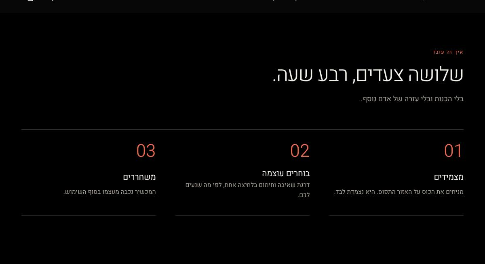
צילום מהטיוטה · h-how.jpg
מה
קיים היום
מוצע
סטטוס
שורת על
איך זה עובד
איך אנחנו עובדים
מחליפים
כותרת
שלושה צעדים, רבע שעה.
שלושה דברים שנכונים לכל מכשיר.
מחליפים
משפט
בלי הכנות ובלי עזרה של אדם נוסף.
ככה אנחנו עובדים עם כל אחד מהמכשירים.
מחליפים
01
מצמידים מניחים את הכוס על האזור התפוס. היא נצמדת לבד.
מסבירים לפני שמוכרים בעמוד של כל מכשיר: מה מרגישים, למי הוא לא מתאים, ומה כלול.
מחליפים
02
בוחרים עוצמה דרגת שאיבה וחימום בלחיצה אחת, לפי מה שנעים לכם.
מחזירים בלי מאבק 14 יום מיום הקבלה, בלי דמי ביטול, ומשלוח ההחזרה עלינו.
מחליפים
03
משחררים המכשיר נכבה מעצמו בסוף השימוש.
עונים בעצמנו בווטסאפ, א׳–ה׳ 09:00–18:00. אדם אחד, שקורא כל הודעה.
מחכה לנתון
מיקום
מיד אחרי ההירו
ללא שינוי
נשאר
למה המקטע הזה תיאר את שלושת צעדי השימוש בכוס, לפני שהגולש ראה שיש כוס. באתר כללי המקום הזה הוא המקום להסביר מה מבדיל את LORINX, והדבר שמשותף לכל המוצרים הוא אופן השירות. שלושת הצעדים של הכוס (מצמידים, בוחרים עוצמה, משחררים) עוברים לעמוד הכוס, שבו כבר יש מקטע כזה.
לפני שמיישמים
"עונים בעצמנו": רק אם נכון. "בווטסאפ": לאמת שהמספר פעיל ושעונים בו.
לא כותבים "אדם אחד" אם יש יותר.
H4
בחירת מכשיר (במקום "המוצר המוביל": כוס הרוח)
עדיפות: גבוה
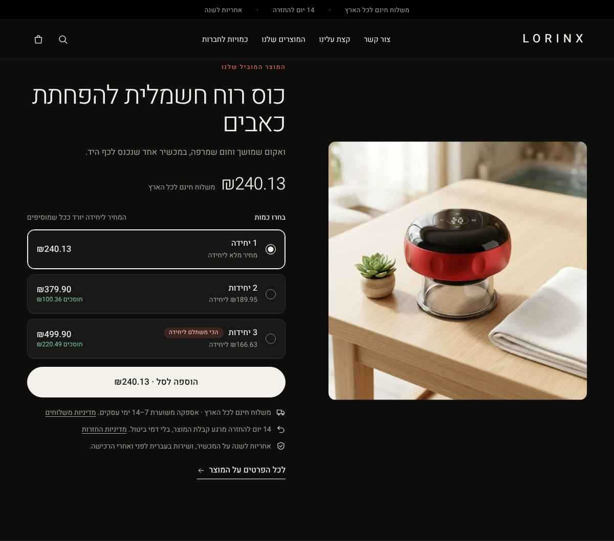
צילום מהטיוטה · h-featured.jpg
מה
קיים היום
מוצע
סטטוס
שורת על
המוצר המוביל שלנו
איך בוחרים
מחליפים
כותרת
כוס רוח חשמלית להפחתת כאבים
מה אתם מחפשים?
מחליפים
מבנה
קופסת קנייה מלאה של כוס הרוח, עם בחירת כמות וכפתור הוספה לסל
ארבע שורות, שכל אחת מובילה לעמוד המכשיר
מחליפים
שורה 1
—
לכתפיים ולגב אחרי יום מול המחשב: כוס רוח חשמלית
מוסיפים
שורה 2
—
לשרירים לפני אימון ואחריו: אקדח עיסוי
מוסיפים
שורה 3
—
לרגליים אחרי יום עמידה או הליכה: מכשיר עיסוי לרגליים
מוסיפים
שורה 4
—
לאימון קצר לירכיים, בבית: מאמן ירכיים
מוסיפים
מחיר
₪240.13 (כוס הרוח)
המחירים עוברים לכרטיסי המוצרים בקולקציה
מורידים
למה קופסת הקנייה של הכוס בדף הבית ממצבת אותה כמוצר היחיד של החנות. באתר כללי, הדף הזה צריך לעזור לגולש לבחור בין המכשירים. ארבעת התיאורים נלקחו מהטקסט שכבר כתוב בעמודי המוצרים עצמם ("אחרי יום מול המחשב, על הכתפיים", "לפני אימון: שתי דקות על השריר העיקרי", "אחרי יום עמידה: עשרים דקות בכורסה", "אימון התנגדות לירכיים").
לפני שמיישמים
לפי הנתונים, הכוס היא המוצר שמכר עד היום. אם רוצים לשמור אותה כ"הנמכר ביותר", אפשר להוסיף תווית כזו לכרטיס שלה בקולקציה, כל עוד זה נכון בנתוני החנות.
שם הכוס ללא "להפחתת כאבים": ראו H6 (כרטיסי הקולקציה) ו-P1.
H5
"מתי משתמשים"
עדיפות: בינוני
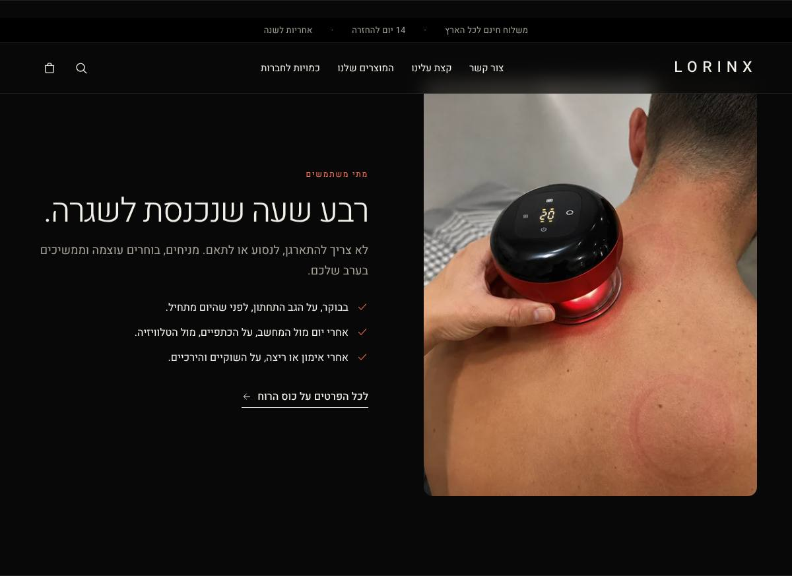
צילום מהטיוטה · h-when.jpg
מה
קיים היום
מוצע
סטטוס
שורת על
מתי משתמשים
ללא שינוי
נשאר
כותרת
רבע שעה שנכנסת לשגרה.
לפני, אחרי ובסוף היום.
מחליפים
משפט
לא צריך להתארגן, לנסוע או לתאם. מניחים, בוחרים עוצמה וממשיכים בערב שלכם.
בלי לקבוע תור ובלי לצאת מהבית.
מחליפים
שורה 1
בבוקר, על הגב התחתון, לפני שהיום מתחיל.
לפני אימון: אקדח עיסוי, שתי דקות על השריר העיקרי.
מחליפים
שורה 2
אחרי יום מול המחשב, על הכתפיים, מול הטלוויזיה.
אחרי יום מול המחשב: כוס רוח חשמלית על הכתפיים, רבע שעה בסלון.
מחליפים
שורה 3
אחרי אימון או ריצה, על השוקיים והירכיים.
אחרי יום על הרגליים: מכשיר עיסוי לרגליים, עשרים דקות בכורסה.
מחליפים
שורה 4
—
בבוקר, עם הקפה: מאמן ירכיים, חמש דקות.
מוסיפים
כפתור
לכל הפרטים על כוס הרוח
לכל המוצרים
מחליפים
למה המקטע תיאר רק את הכוס. הנוסח המוצע מחלק את אותם רגעים בין ארבעת המכשירים, ובנוי רק ממשפטים שכבר כתובים בעמודי המוצרים. ההבטחה "בלי לקבוע תור" נשארת, אבל בלי "בלי תור לפיזיותרפיה".
לפני שמיישמים
משך השימוש בכל מכשיר נלקח מעמוד המוצר שלו. אם משנים שם, צריך לעדכן כאן.
H6
הקולקציה בדף הבית
עדיפות: גבוה
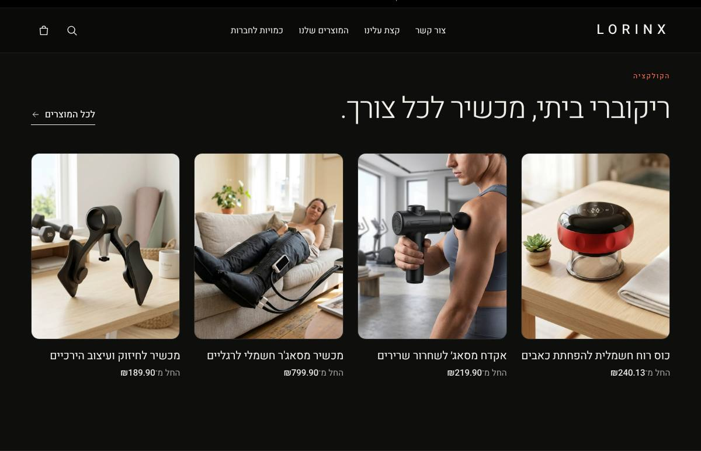
צילום מהטיוטה · h-collection.jpg
מה
קיים היום
מוצע
סטטוס
כותרת
ריקוברי ביתי, מכשיר לכל צורך.
עיסוי, חום ואימון קצר. בבית.
מחליפים
כרטיס 1
כוס רוח חשמלית להפחתת כאבים
כוס רוח חשמלית עם חימום
דורש אישור מיוחד
כרטיס 2
אקדח מסאג׳ לשחרור שרירים
אקדח עיסוי לשרירים
דורש אישור מיוחד
כרטיס 3
מכשיר מסאג'ר חשמלי לרגליים
מכשיר עיסוי לרגליים
דורש אישור מיוחד
כרטיס 4
מכשיר לחיזוק ועיצוב הירכיים
מאמן ירכיים ביתי
דורש אישור מיוחד
למה "ריקוברי" היא מילה לועזית שלא נמצאה בשפת הלקוחות, ו"לכל צורך" לא נכון לארבעה מוצרים. אצל הקמעונאים בישראל (Zap, Bug) המונח הוא "אקדח עיסוי" ו"מכשיר עיסוי לרגליים". "מסאג'ר" לא נמצא אצל אף קמעונאי. מאמן הירכיים הוא מכשיר אימון, והכותרת המוצעת מכסה גם אותו.
לפני שמיישמים
להחלטתך: לתת למאמן הירכיים ולמכשיר הרגליים מקום באתר רק אחרי שיש להם עמוד מלא. ב-90 הימים האחרונים הגיעו אליהם 15 ו-27 כניסות מרשתות, בלי הוספה לסל.
כל ארבעת הכרטיסים באותו משקל, בלי "מוביל".
H7
הודעות מלקוחות
עדיפות: גבוה
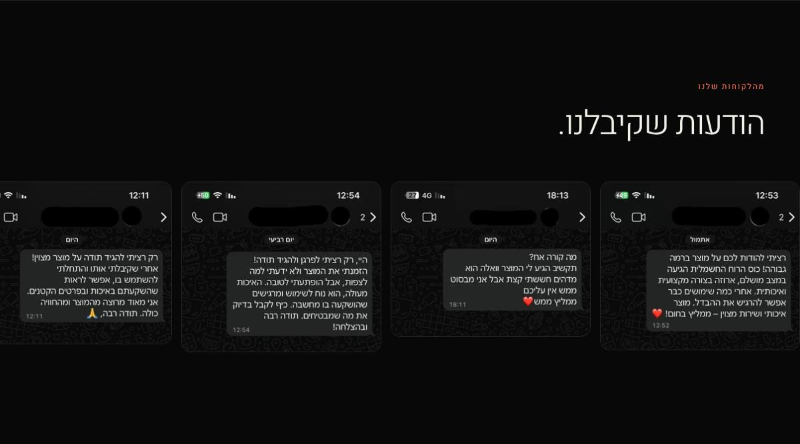
צילום מהטיוטה · h-reviews.jpg
מה
קיים היום
מוצע
סטטוס
כותרת
מהלקוחות שלנו הודעות שקיבלנו.
מהלקוחות שלנו הודעות שקיבלנו בווטסאפ.
מחליפים
תוכן
שישה צילומי מסך, בלי טקסט מתחתיהם
מתחת לכל צילום: עיקר ההודעה בטקסט, שם פרטי ואות, חודש ומוצר
מוסיפים
למה בנייד הטקסט בתוך הצילומים קטן מכדי לקרוא, וקוראי מסך ומנועי חיפוש לא רואים אותו. זו ההוכחה היחידה שיש באתר, ולכן כדאי שתיקרא. באתר כללי חשוב במיוחד לציין על איזה מוצר ההודעה.
לפני שמיישמים
אישור ממך שההודעות אמיתיות, מלקוחות ששילמו, ושניתנה הסכמה לפרסם.
לא מוסיפים דירוג כוכבים או מספר ביקורות בלי מקור.
אם כל ההודעות הן על הכוס, לציין זאת ולא להציג אותן כהודעות על כל המותג.
H8
"הסיפור שלנו" בדף הבית
עדיפות: גבוה
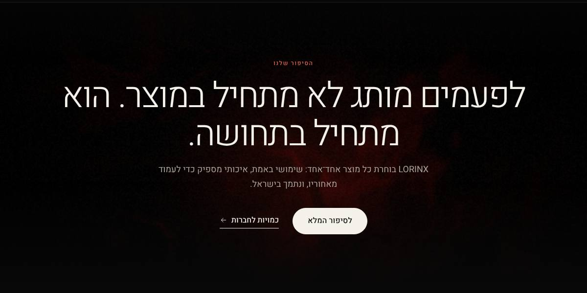
צילום מהטיוטה · h-story.jpg
מה
קיים היום
מוצע
סטטוס
כותרת
לפעמים מותג לא מתחיל במוצר. הוא מתחיל בתחושה.
ללא שינוי
נשאר
טקסט
LORINX בוחרת כל מוצר אחד־אחד: שימושי באמת, איכותי מספיק כדי לעמוד מאחוריו, ונתמך בישראל.
מאחורי LORINX עומד [שם]. אני בוחר כל מכשיר, ואני קורא כל הודעה.
מחכה לנתון
כפתורים
לסיפור המלא · כמויות לחברות
ללא שינוי
נשאר
למה באתר כללי, המקטע הזה הוא ההבטחה של המותג, ולכן הוא חשוב יותר מבעבר. אין באתר אדם. משפט אחד עם שם נותן לגולש מישהו לסמוך עליו. "איכותי מספיק" הוא ניסוח שאי אפשר להוכיח, והוא יורד.
לפני שמיישמים
"אני בוחר כל מכשיר" נכון רק אם יש תהליך בחירה אמיתי, ומה שנבדק בפועל כתוב בעמוד "קצת עלינו". אם אין, מנסחים: "מאחורי LORINX עומד [שם]. אני קורא כל הודעה."
"נתמך בישראל" הוסר כי הוא מרמז על מלאי בארץ, והמשלוח יוצא מחו"ל.
H9
שאלות נפוצות בדף הבית
עדיפות: גבוה
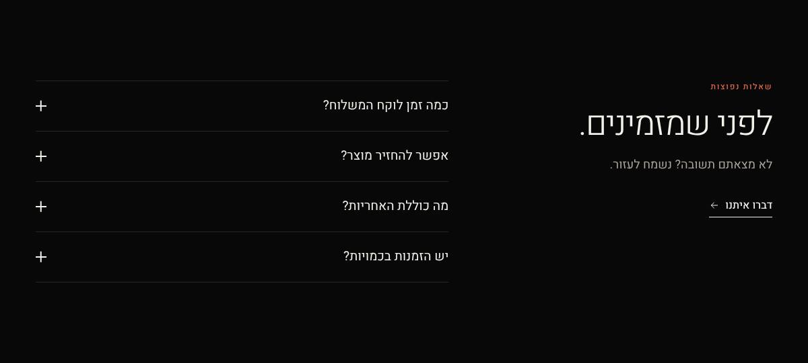
צילום מהטיוטה · h-faq.jpg
מה
קיים היום
מוצע
סטטוס
כמה זמן לוקח המשלוח?
המשלוח חינם. זמן האספקה המשוער הוא 7–14 ימי עסקים.
המשלוח חינם. ההזמנה יוצאת מהמחסן בחו"ל תוך עד 4 ימי עסקים, ומגיעה 7–14 ימי עסקים אחר כך. מספר מעקב נשלח במייל.
מחליפים
אפשר להחזיר מוצר?
כן. אפשר להחזיר תוך 14 יום מקבלת המוצר, בלי דמי ביטול. פנו אלינו ונלווה את התהליך.
כן. 14 יום מיום הקבלה, בלי דמי ביטול, ומשלוח ההחזרה עלינו. כותבים לנו ואנחנו מסבירים איך.
מחליפים
מה כוללת האחריות?
אחריות לשנה על המכשיר, כולל מענה ותמיכה בעברית.
שנה, על פגמי ייצור ותקלות במכשיר. שולחים לנו הודעה עם מספר ההזמנה, ואנחנו מתקנים או מחליפים.
מחליפים
יש הזמנות בכמויות?
כן. לחברות ולארגונים יש מחירים מיוחדים ושירות אישי, בעמוד כמויות לחברות.
ללא שינוי
נשאר
שאלה חדשה
—
איך אני יודע איזה מכשיר מתאים לי? בעמוד כל מכשיר יש "למי זה מתאים" ו"למי לא". הרשימה בראש דף הבית מסדרת אותם לפי מה שאתם מחפשים.
מוסיפים
שאלה חדשה
—
למי המכשירים לא מתאימים? לכל מכשיר יש בעמוד שלו רשימה של מי שלא כדאי שישתמש. אם יש ספק, שואלים רופא לפני.
מוסיפים
למה היום השאלות הן רק לוגיסטיקה, ואין בהן שאלה כללית שהקונה שואל לפני שבוחר בין מכשירים. שאלות מסוג "זה כואב?" ו"נשארים סימנים?" שייכות לעמוד הכוס, והן שם (P10).
לפני שמיישמים
התקנון אומר שהאחריות היא "ממועד רכישת המוצר". להחליט אם מהרכישה או מהקבלה, וליישר.
התשובה על "למי לא מתאימים" נכונה רק אחרי שמוסיפים רשימה כזו גם לעמודי האקדח, הרגליים והירכיים. היום יש רשימה רפואית רק בעמוד הכוס.
H10
פוטר ותפריט
עדיפות: בינוני
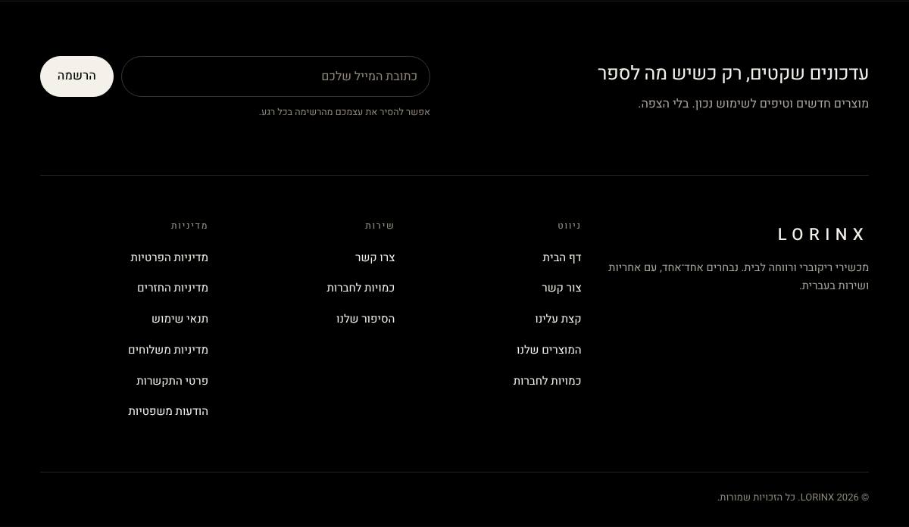
צילום מהטיוטה · h-footer.jpg
מה
קיים היום
מוצע
סטטוס
טקסט מותג
מכשירי ריקוברי ורווחה לבית. נבחרים אחד־אחד, עם אחריות ושירות בעברית.
מכשירי עיסוי והתאוששות לבית. אחריות, 14 יום להחזרה ושירות בעברית.
מחליפים
שורת זהות
אין
LORINX · [הכתובת שכתובה בתקנון]
מוסיפים
תפריט עליון
צור קשר
צרו קשר
מחליפים
ניוזלטר
עדכונים שקטים, רק כשיש מה לספר מוצרים חדשים וטיפים לשימוש נכון. בלי הצפה.
ללא שינוי
נשאר
למה שם העסק, הכתובת והטלפונים כתובים היום רק בסוף התקנון. כל האתר פונה ברבים ("צרו קשר" בפוטר ובעמוד עצמו), ורק בתפריט כתוב "צור קשר". "נבחרים אחד־אחד" יורד מהפוטר עד שמאמתים תהליך בחירה.
לפני שמיישמים
אם להציג גם את מספר העוסק בפוטר זו החלטה שלך.
H11
כותרת הדפדפן ותיאור החיפוש
עדיפות: גבוה
מה
קיים היום
מוצע
סטטוס
כותרת (title)
LORINX
LORINX | מכשירי עיסוי והתאוששות לבית
מחליפים
תיאור (meta)
LORINX — מכשירי ריקוברי ורווחה לבית: כוס רוח חשמלית, אקדח עיסוי ועוד. משלוח חינם, 14 יום להחזרה ואחריות לשנה.
LORINX: מכשירי עיסוי והתאוששות לבית. כוס רוח חשמלית, אקדח עיסוי, מכשיר עיסוי לרגליים ומאמן ירכיים. משלוח חינם, 14 יום להחזרה ואחריות לשנה.
מחליפים
למה מי שמחפש בגוגל רואה היום רק "LORINX". הכותרת המוצעת אומרת מה נמכר בלי להסתמך על מוצר אחד. שמות המוצרים נשארים בתיאור, כי שאילתות כמו "כוס רוח חשמלית" הן נקודות הכניסה הריאליות של חנות קטנה.
עמוד כוס הרוח
עמוד מוצר אחד מתוך ארבעה, והיחיד שנמכר עד היום: ב-90 הימים האחרונים 7 רכישות הגיעו מרשתות חברתיות ישר לכאן (530 כניסות). המבנה והמסרים נשארים, ורק תיקוני האמינות נוגעים בו. השאר ברמת המותג, ובדף הבית.
P1
קופסת הקנייה: שם, משפט ונקודות
עדיפות: קריטי
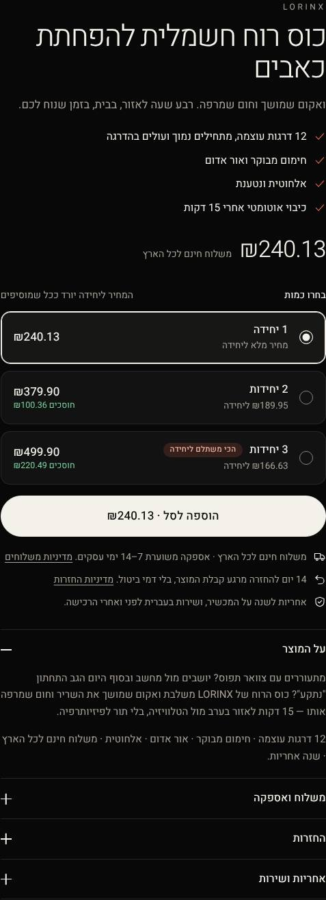
צילום מהטיוטה · p-buybox.jpg
מה
קיים היום
מוצע
סטטוס
שם המוצר
כוס רוח חשמלית להפחתת כאבים
כוס רוח חשמלית עם חימום
דורש אישור מיוחד
משפט
ואקום שמושך וחום שמרפה. רבע שעה לאזור, בבית, בזמן שנוח לכם.
ואקום שמושך וחום שמרפה, על הכתפיים או על הגב התפוס. רבע שעה, בבית, בזמן שנוח לכם.
מחליפים
נקודה 1
12 דרגות עוצמה, מתחילים נמוך ועולים בהדרגה
12 דרגות שאיבה. מתחילים ב-1 ועולים רק אם נעים
מחליפים
נקודה 2
חימום מבוקר ואור אדום
חימום ואור אדום, בלחיצה אחת
מחליפים
נקודה 3
אלחוטית ונטענת
ללא שינוי. אם יש נתון מהיצרן: כמה שימושים בין טעינות
מחכה לנתון
נקודה 4
כיבוי אוטומטי אחרי 15 דקות
נכבית לבד אחרי 15 דקות
מחליפים
למה המשפט הקיים טוב. התוספת היחידה היא האזור, מתוך האזורים שהעמוד עצמו מתיר (גב, כתפיים, שוקיים, ירכיים). צוואר לא מוזכר עד שבודקים מול הוראות היצרן.
לפני שמיישמים
12 דרגות, אור אדום והכיבוי אחרי 15 דקות: לאמת מול המכשיר או דף היצרן.
P2
בחירת הכמות
עדיפות: גבוה
מה
קיים היום
מוצע
סטטוס
כותרת
בחרו כמות המחיר ליחידה יורד ככל שמוסיפים
כמה כוסות?
מחליפים
1 יחידה
מחיר מלא ליחידה
אחת · לשימוש אישי
מחליפים
2 יחידות
₪189.95 ליחידה חוסכים ₪100.36
שתיים · אחת לכם, אחת לבן או לבת הזוג ₪189.95 ליחידה · חוסכים ₪100.36
מחליפים
3 יחידות
הכי משתלם ליחידה ₪166.63 ליחידה חוסכים ₪220.49
שלוש · לכל הבית, או שתיים לכם ואחת במתנה ₪166.63 ליחידה · חוסכים ₪220.49
מחליפים
למה היום כתוב כמה חוסכים, ולא למה לקנות יותר מאחת. החבילות הן מקור הרווח העיקרי, ולכן כדאי לתת להן סיבה. החשבון של החיסכון נכון ונשאר.
P3
שלוש השורות מתחת לכפתור
עדיפות: גבוה
מה
קיים היום
מוצע
סטטוס
שורה 1
משלוח חינם לכל הארץ · אספקה משוערת 7–14 ימי עסקים. מדיניות משלוחים
מגיע עד [תאריך מחושב], ישירות מהמחסן בחו"ל, עם מספר מעקב במייל. מדיניות משלוחים
מחכה לנתון
שורה 2
14 יום להחזרה מרגע קבלת המוצר, בלי דמי ביטול. מדיניות החזרות
14 יום להחזרה מיום הקבלה. בלי דמי ביטול, ומשלוח ההחזרה עלינו. מדיניות החזרות
מחליפים
שורה 3
אחריות לשנה על המכשיר, ושירות בעברית לפני ואחרי הרכישה.
אחריות לשנה. תיקון או החלפה.
מחליפים
שורה חדשה
—
מידע בטיחות: למי המכשיר לא מתאים ›
מוסיפים
כפתור
הוספה לסל · ₪240.13
ללא שינוי
נשאר
למה זה המקום שבו מחליטים. היום לא כתוב כאן שמשלוח ההחזרה על חשבון החנות, ולא כתוב באף מקום חוץ מהמדיניות שהמשלוח יוצא מחו"ל. אזהרת הבטיחות היא קישור לרשימה המלאה, כי רשימה חלקית ליד הכפתור נראית מלאה ואינה כזו.
לפני שמיישמים
לא כותבים "נסו 14 יום": מדיניות ההחזרים לא אומרת מה קורה עם מכשיר שכבר השתמשו בו.
עד שיש תאריך מחושב: "7–14 ימי עסקים, אחרי עיבוד של עד 4 ימי עסקים. נשלח מחו"ל".
P4
תיאור המוצר (היום בתוך אקורדיון "על המוצר")
עדיפות: גבוה
מה
קיים היום
מוצע
סטטוס
טקסט
מתעוררים עם צוואר תפוס? יושבים מול מחשב ובסוף היום הגב התחתון "נתקע"? כוס הרוח של LORINX משלבת ואקום שמושך את השריר וחום שמרפה אותו — 15 דקות לאזור בערב מול הטלוויזיה, בלי תור לפיזיותרפיה.
מתעוררים עם כתפיים תפוסות? יושבים מול מחשב, ובסוף היום הגב התחתון "נתקע"? הכוס נצמדת לעור, שואבת ומחממת. רבע שעה בערב, מול הטלוויזיה, בלי לקבוע תור ובלי לצאת מהבית.
דורש אישור מיוחד
שורת מפרט
12 דרגות עוצמה · חימום מבוקר · אור אדום · אלחוטית · משלוח חינם לכל הארץ · שנה אחריות.
ללא שינוי
נשאר
מיקום
מקופל בתוך אקורדיון
גלוי, מעל האקורדיונים
מחליפים
למה זה הקטע היחיד בעמוד שמדבר על הבעיה בשפה של הלקוח, והוא מוסתר. "בלי תור לפיזיותרפיה" משווה את המכשיר לטיפול רפואי.
לפני שמיישמים
הטקסט נמצא בשדה התיאור ב-Shopify, ולכן גם זה דורש אישור מפורש.
P5
"מה יש בפנים": חמש התכונות
עדיפות: בינוני
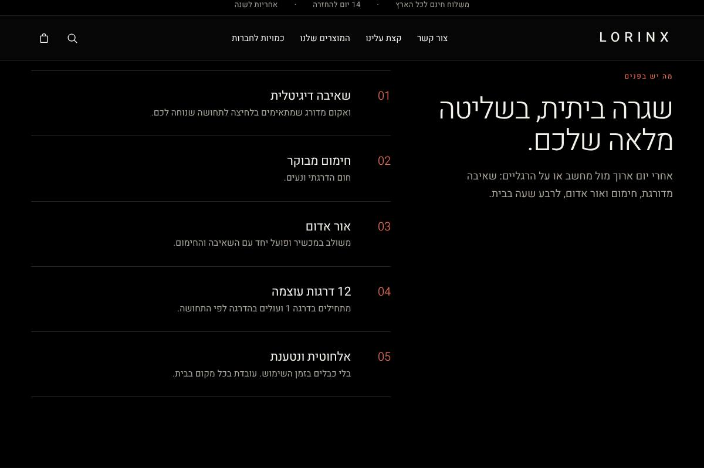
צילום מהטיוטה · p-features.jpg
מה
קיים היום
מוצע
סטטוס
כותרת ומשפט
שגרה ביתית, בשליטה מלאה שלכם. אחרי יום ארוך מול מחשב או על הרגליים: שאיבה מדורגת, חימום ואור אדום, לרבע שעה בבית.
ללא שינוי
נשאר
חמש התכונות
שאיבה דיגיטלית · חימום מבוקר · אור אדום · 12 דרגות עוצמה · אלחוטית ונטענת
אותן תכונות, עם מספר לכל אחת כשיש: טמפרטורה, זמן סוללה, משקל
מחכה לנתון
מקטע חדש
—
מה באריזה: [רשימה מהיצרן]
מוסיפים
למה אין בעמוד אף נתון שאפשר להשוות. הניסוחים זהירים וזה נכון, אבל "חום הדרגתי ונעים" לא אומר ללקוח דבר.
לפני שמיישמים
בלי מפרט מהיצרן לא מוסיפים מספרים.
P6
"למי זה מתאים"
עדיפות: נמוך
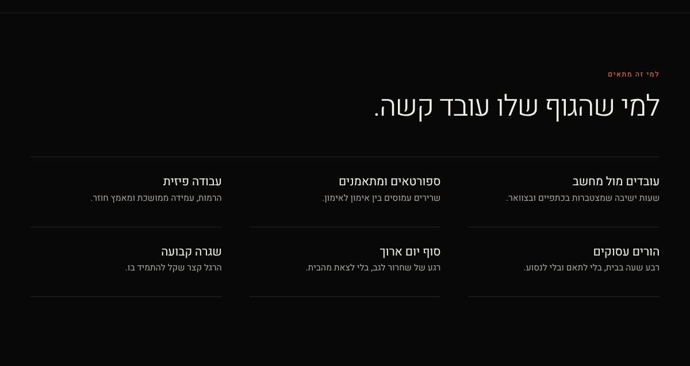
צילום מהטיוטה · p-who.jpg
מה
קיים היום
מוצע
סטטוס
שש קוביות
עובדים מול מחשב · ספורטאים ומתאמנים · עבודה פיזית · הורים עסוקים · סוף יום ארוך · שגרה קבועה
ארבע קוביות: עובדים מול מחשב · ספורטאים ומתאמנים · עבודה פיזית · הורים עסוקים
מורידים
למה "סוף יום ארוך" ו"שגרה קבועה" הן מצבים ולא אנשים, והן מדללות את המקטע.
P7
"מה לצפות"
עדיפות: גבוה
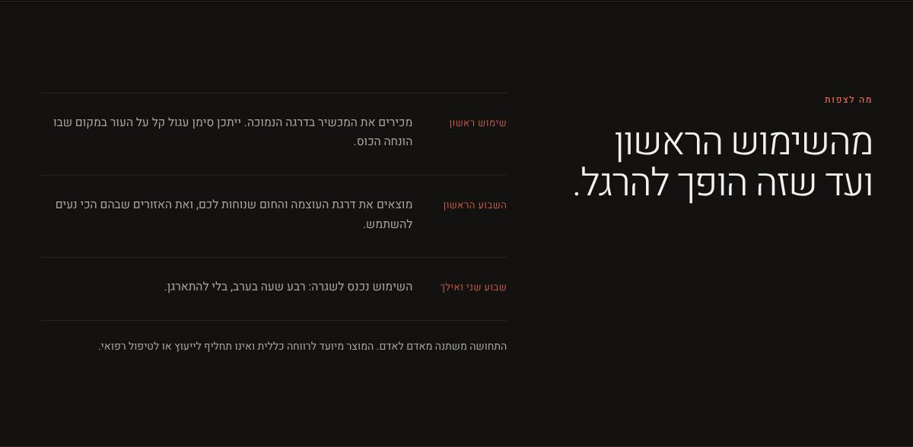
צילום מהטיוטה · p-expect.jpg
מה
קיים היום
מוצע
סטטוס
כותרת
מהשימוש הראשון ועד שזה הופך להרגל.
ללא שינוי
נשאר
שימוש ראשון
מכירים את המכשיר בדרגה הנמוכה. ייתכן סימן עגול קל על העור במקום שבו הונחה הכוס.
בזמן השימוש: העור נמשך אל תוך הכוס ומתחמם. המשיכה מורגשת היטב. מתחילים בדרגה 1, ואם כואב, מורידים דרגה או מפסיקים.
מחליפים
השבוע הראשון
מוצאים את דרגת העוצמה והחום שנוחות לכם, ואת האזורים שבהם הכי נעים להשתמש.
אחרי השימוש: ייתכן סימן עגול, אדום עד סגלגל, כמו בכוסות רוח רגילות. הוא דוהה עם הזמן, ואצל חלק מהאנשים זה לוקח יותר משבוע. לפני אירוע או ים, עדיף לא להשתמש על אזור גלוי.
מחליפים
שבוע שני ואילך
השימוש נכנס לשגרה: רבע שעה בערב, בלי להתארגן.
ללא שינוי
נשאר
הסתייגות
התחושה משתנה מאדם לאדם. המוצר מיועד לרווחה כללית ואינו תחליף לייעוץ או לטיפול רפואי.
ללא שינוי
נשאר
למה זה המקטע הכי מבדל בעמוד, והוא לא אומר מה מרגישים ולא מה קורה עם הסימנים. הסימנים הם החשש שחוזר הכי הרבה בביקורות על מכשירים דומים.
לפני שמיישמים
הקטע על הסימנים צריך אישור מול הוראות היצרן.
P8
"למה LORINX"
עדיפות: גבוה
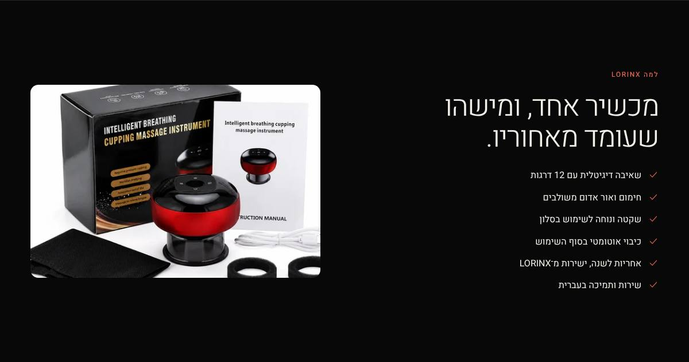
צילום מהטיוטה · p-why.jpg
מה
קיים היום
מוצע
סטטוס
כותרת
מכשיר אחד, ומישהו שעומד מאחוריו.
מה מקבלים כשמזמינים מ-LORINX
מחליפים
נקודות
שאיבה דיגיטלית עם 12 דרגות חימום ואור אדום משולבים שקטה ונוחה לשימוש בסלון כיבוי אוטומטי בסוף השימוש אחריות לשנה, ישירות מ־LORINX שירות ותמיכה בעברית
מוכר ישראלי עם שם, טלפון וכתובת. הוראות בעברית באריזה [לאימות]. 14 יום להחזרה, ומשלוח ההחזרה עלינו. אחריות לשנה, ואדם שעונה כשמשהו לא עובד.
מחליפים
למה ארבע מתוך שש הנקודות הן תכונות של המכשיר, שכבר כתובות למעלה. מכשירים דומים מאוד נמכרים בישראל במחיר נמוך יותר (₪198 אצל Goodest, ₪119 אצל Velarixs), ולכן המקטע צריך לומר מה מקבלים מ-LORINX עצמה. בלי להשוות למוכרים אחרים בעמוד.
לפני שמיישמים
"שקטה": רק אם יש נתון. אחרת לא טוענים.
P9
"שימוש נכון" ואזהרות
עדיפות: בינוני
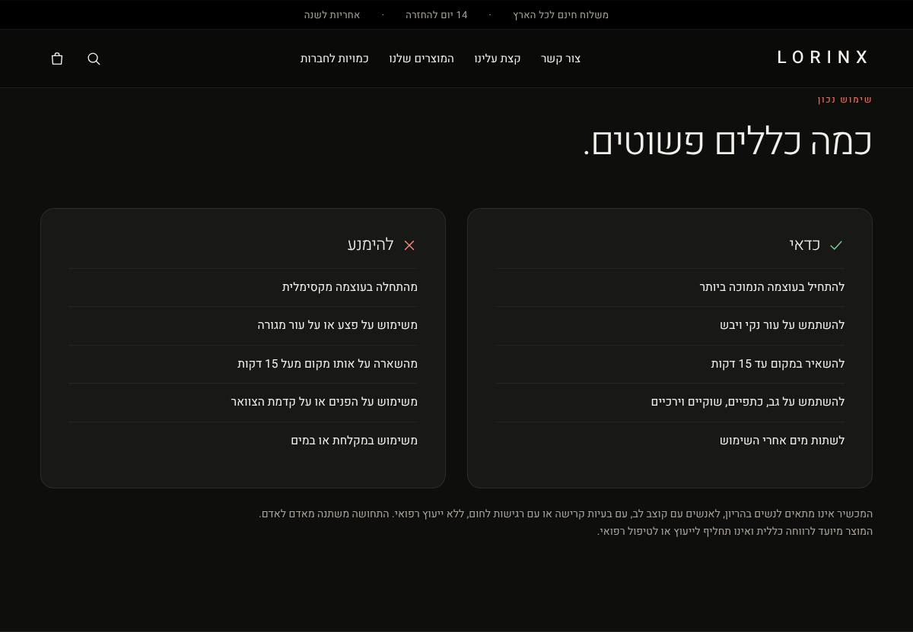
צילום מהטיוטה · p-rules.jpg
מה
קיים היום
מוצע
סטטוס
כדאי / להימנע
שתי רשימות של חמש נקודות
ללא שינוי
נשאר
למי לא מתאים
המכשיר אינו מתאים לנשים בהריון, לאנשים עם קוצב לב, עם בעיות קרישה או עם רגישות לחום, ללא ייעוץ רפואי.
הרשימה המלאה מהוראות היצרן: [רשימה]
מחכה לנתון
למה הרשימה הקיימת חלקית. חסרים בה, למשל, מחלות עור ותרופות לדילול דם, שמופיעים ברשימות של מותגים מובילים.
P10
שאלות נפוצות בעמוד המוצר
עדיפות: גבוה
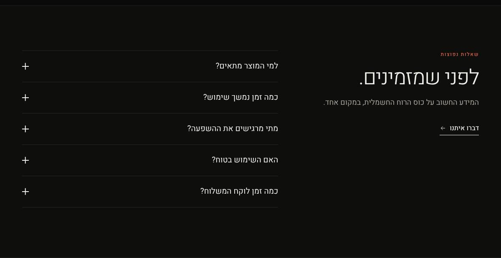
צילום מהטיוטה · p-faq.jpg
מה
קיים היום
מוצע
סטטוס
מתי מרגישים את ההשפעה?
התחושה משתנה מאדם לאדם. מומלץ להתחיל בדרגה נמוכה ולמצוא את השגרה שנוחה לכם.
מה מרגישים בזמן השימוש? חום ומשיכה, מהדקה הראשונה. איך הגוף מרגיש אחר כך משתנה מאדם לאדם.
מחליפים
האם השימוש בטוח?
המכשיר תוכנן לשימוש ביתי פשוט. אתם בוחרים את עוצמת הוואקום ואת רמת החימום, כך שאפשר להתחיל נמוך ולעלות בהדרגה. קראו את הוראות השימוש לפני ההפעלה, והימנעו משימוש על עור פצוע או מגורה ובאזורים רגישים.
ללא שינוי, בתוספת קישור לרשימת "למי לא מתאים"
נשאר
כמה זמן לוקח המשלוח?
המשלוח חינם. זמן האספקה המשוער הוא 7–14 ימי עסקים.
המשלוח חינם. ההזמנה יוצאת מהמחסן בחו"ל תוך עד 4 ימי עסקים, ומגיעה 7–14 ימי עסקים אחר כך. מספר מעקב נשלח במייל.
מחליפים
שאלה חדשה
—
זה כואב? מרגישים משיכה חזקה וחום. מתחילים בדרגה 1. אם כואב, מורידים דרגה או מפסיקים.
מוסיפים
שאלה חדשה
—
נשארים סימנים? לפעמים. סימן עגול, אדום עד סגלגל, שדוהה עם הזמן.
מוסיפים
שאלה חדשה
—
כמה חזקה השאיבה ביחס לכוס רוח רגילה? [תשובה אחרי בדיקה מול המכשיר]
מחכה לנתון
שאלה חדשה
—
מה כוללת האחריות? שנה, על פגמי ייצור ותקלות במכשיר. שולחים לנו הודעה עם מספר ההזמנה, ואנחנו מתקנים או מחליפים.
מוסיפים
למי המוצר מתאים? · כמה זמן נמשך שימוש?
שתי תשובות קיימות
ללא שינוי
נשאר
למה "התחושה משתנה מאדם לאדם" לא עונה על השאלה. השאלה על עוצמת השאיבה חשובה למי שמכיר כוסות רוח מטיפול.
P11
הקריאה האחרונה
עדיפות: נמוךצילום מהטיוטה · p-final.jpg
מה
קיים היום
מוצע
סטטוס
כותרת
מוכנים לנסות?
רבע שעה בשבילכם.
מחליפים
משפט
משלוח חינם, 14 יום להחזרה ואחריות לשנה.
משלוח חינם, ו-14 יום להחזרה.
מחליפים
כפתור
חזרה לבחירת הכמות
ללא שינוי
נשאר
למה "לנסות" מרמז על תקופת ניסיון שהמדיניות לא מבטיחה במפורש.
P12
כותרת הדפדפן ותיאור החיפוש
עדיפות: גבוה
מה
קיים היום
מוצע
סטטוס
כותרת (title)
כוס רוח חשמלית להפחתת כאבים מבית — ™LORINX
כוס רוח חשמלית עם חימום ואור אדום | LORINX
דורש אישור מיוחד
תיאור (meta)
כוס רוח חשמלית עם ואקום, חום ואור אדום להרפיית צוואר תפוס, כתפיים וגב תחתון בבית. 12 דרגות עוצמה, אלחוטית, משלוח חינם ושנה אחריות.
כוס רוח חשמלית אלחוטית עם ואקום, חימום ואור אדום. 12 דרגות עוצמה וכיבוי אוטומטי אחרי 15 דקות. כוסות רוח בבית, משלוח חינם ואחריות לשנה.
דורש אישור מיוחד
למה "כוס רוח חשמלית" היא השאילתה שבה מופיעות רק חנויות קטנות, ולכן היא היעד הריאלי היחיד בטווח הקצר. התיאור המוצע מכניס גם את צורת הרבים "כוסות רוח".
P13
העמוד בנייד
עדיפות: בינוני
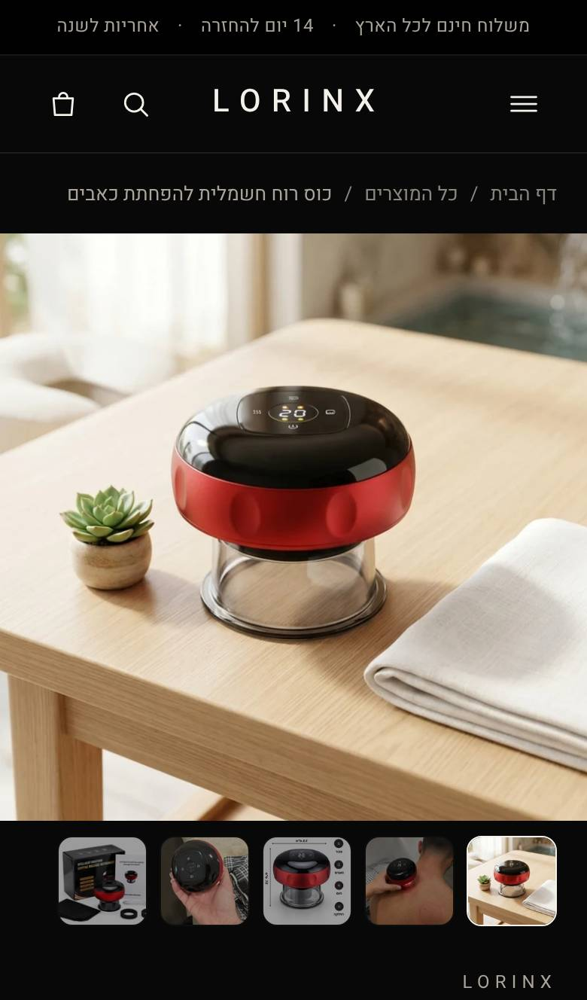
צילום מהטיוטה · m-cup-fold.jpg
מה
קיים היום
מוצע
סטטוס
מסך ראשון
פס הודעות, תפריט, פירורי לחם ותמונה. השם, המחיר והכפתור מתחת לקפל
ללא שינוי במבנה. לוודא שהשורה הראשונה מתחת לתמונה תואמת את המודעה
מחכה לנתון
למה מי שמגיע ממודעה רואה קודם תמונה. צריך שהמשפט הראשון שהוא קורא ימשיך את מה שהמודעה אמרה.
לפני שמיישמים
לא ראיתי את המודעות. צריך לשלוח אותן כדי להתאים.
שלושת המוצרים האחרים
בשלושתם שדה התיאור ב-Shopify ריק, ולכן האקורדיון "על המוצר" נפתח בלי תוכן.
G1
אקדח עיסוי
עדיפות: בינוני
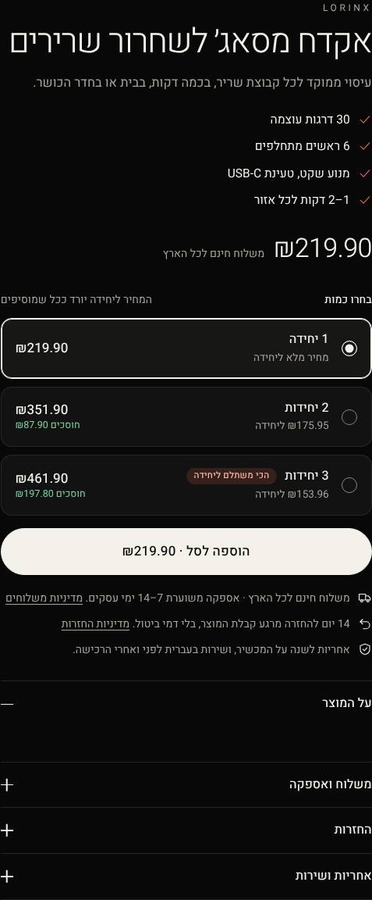
צילום מהטיוטה · g-buybox.jpg
מה
קיים היום
מוצע
סטטוס
שם
אקדח מסאג׳ לשחרור שרירים
אקדח עיסוי לשרירים
דורש אישור מיוחד
משפט
עיסוי ממוקד לכל קבוצת שריר, בכמה דקות, בבית או בחדר הכושר.
דקה־שתיים על השריר שעבד: לפני אימון, אחריו, או על הכתפיים בסוף יום.
מחליפים
נקודות
30 דרגות עוצמה · 6 ראשים מתחלפים · מנוע שקט, טעינת USB-C · 1–2 דקות לכל אזור
ללא שינוי, אחרי אימות
מחכה לנתון
"על המוצר"
ריק
[תיאור של שתיים־שלוש שורות, אחרי שיש מפרט]
מוסיפים
האם השימוש בטוח?
בשימוש נכון ובהתאם להוראות היצרן, האקדח מיועד לשימוש ביתי נוח.
למי לא מתאים: [רשימה מהיצרן]. אם מרגישים כאב חד, מפסיקים.
למה "אקדח עיסוי" הוא המונח אצל הקמעונאים בישראל. אותו מוצר נקרא באתר בשלושה כתיבים.
לפני שמיישמים
מספר הראשים: העמוד אומר 6, ותיאור תמונה שנשאר מהספק אומר 8. לבדוק מה נכון.
אין סיבה נראית לעין לחבילה של שלושה אקדחים. להחלטתך.
F1
מכשיר עיסוי לרגליים (₪799.90)
עדיפות: גבוה
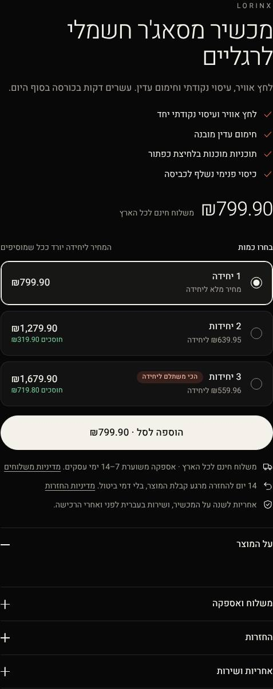
צילום מהטיוטה · f-buybox.jpg
מה
קיים היום
מוצע
סטטוס
שם
מכשיר מסאג'ר חשמלי לרגליים
מכשיר עיסוי לרגליים
דורש אישור מיוחד
משפט
לחץ אוויר, עיסוי נקודתי וחימום עדין. עשרים דקות בכורסה בסוף היום.
אחרי יום שלם על הרגליים: עשרים דקות בכורסה, עם לחץ אוויר וחום.
מחכה לנתון
"על המוצר"
ריק
[תיאור, מידות, משקל, לאיזו מידת נעל מתאים]
מוסיפים
חבילה של 3
3 יחידות · ₪1,679.90 · חוסכים ₪719.80
להוריד את השורה
מורידים
מתחת למחיר
—
עד [X] תשלומים
מחכה לנתון
כותרת דפדפן
מכשיר מסאג'ר חשמלי לרגליים מבית - ™LORINX
מכשיר עיסוי לרגליים עם חימום ולחץ אוויר | LORINX
דורש אישור מיוחד
למה זה המוצר היקר ביותר עם העמוד הדל ביותר, והוא מתחרה במוצר ממותג עם מלאי בארץ (Carbon ב-₪749 אצל Bug). שלושה מכשירים כאלה אינם רכישה סבירה למשק בית.
לפני שמיישמים
חשד לאי־התאמה: התמונה מראה שרוולי לחץ לכל הרגל, והטקסט מדבר על "עיסוי ממוקד לכף הרגל ולעקב" ועל "כיסוי פנימי נשלף לכביסה". לבדוק מול המוצר לפני כל שינוי בטקסט.
האם יש תשלומים בצ'קאאוט.
T1
מאמן ירכיים
עדיפות: בינוני
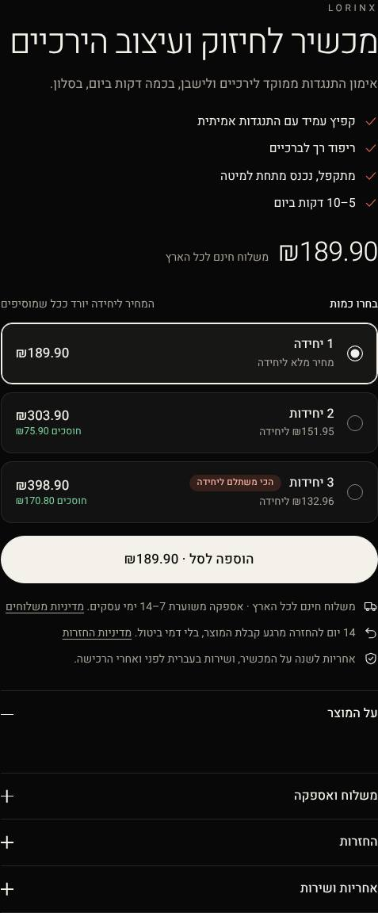
צילום מהטיוטה · t-buybox.jpg
מה
קיים היום
מוצע
סטטוס
שם
מכשיר לחיזוק ועיצוב הירכיים
מאמן ירכיים ביתי
דורש אישור מיוחד
משפט
אימון התנגדות ממוקד לירכיים ולישבן, בכמה דקות ביום, בסלון.
ללא שינוי
נשאר
"על המוצר"
ריק
[תיאור קצר, והאם ההתנגדות מתכווננת]
מוסיפים
אחריות
אחריות לשנה על המכשיר
אחריות לשנה, כולל הקפיץ [אם נכון]
מחכה לנתון
כותרת דפדפן
מכשיר לחיזוק ועיצוב הירכיים מבית - ™LORINX
מכשיר לחיזוק ירכיים – מאמן ירכיים ביתי | LORINX
דורש אישור מיוחד
למה "עיצוב" מרמז על תוצאה חזותית. המשפט הקיים טוב ונשאר. זה מכשיר אימון, ולכן הוא לא שייך תחת הכותרת "התאוששות".
סל הקניות
לפי נתוני החנות, חצי מהמגיעים לצ'קאאוט לא משלימים. את שלבי המשלוח והתשלום לא בדקתי, כי הם דורשים מילוי פרטים.
S1
מגירת הסל
עדיפות: בינוני
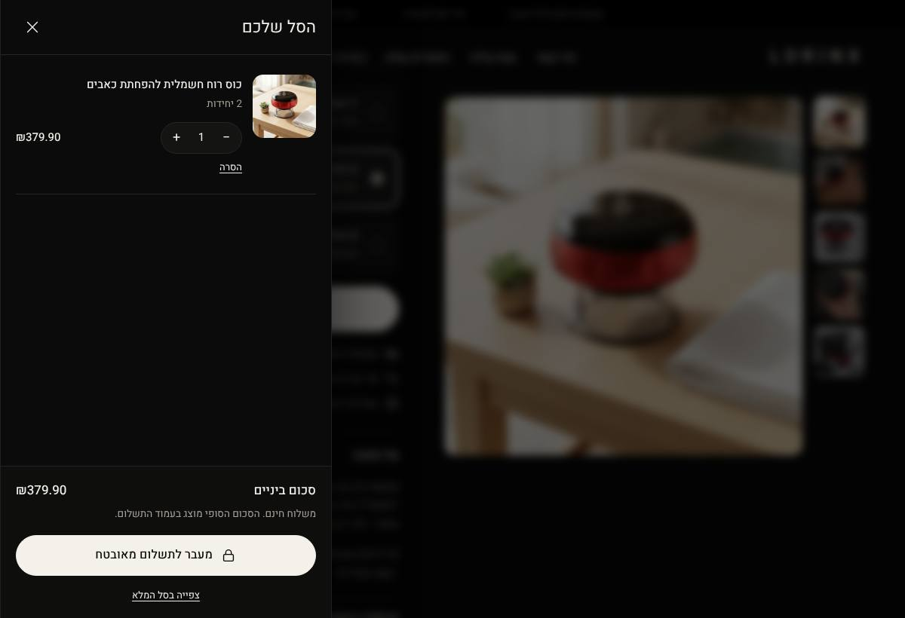
צילום מהטיוטה · cart-drawer.jpg
מה
קיים היום
מוצע
סטטוס
שורת מוצר
כוס רוח חשמלית להפחתת כאבים 2 יחידות כמות: 1
כוס רוח חשמלית עם חימום מארז של 2 כוסות כמות: 1
מחליפים
מתחת לסכום
משלוח חינם. הסכום הסופי מוצג בעמוד התשלום.
משלוח חינם.
מחליפים
כפתור
מעבר לתשלום מאובטח
ללא שינוי
נשאר
למה "2 יחידות" ליד מונה כמות "1" מבלבל: לחיצה על פלוס מוסיפה עוד מארז של שתיים. "הסכום הסופי מוצג בעמוד התשלום" פותח חשש מתוספת.
לפני שמיישמים
לא כותבים "זה המחיר הסופי" עד שמבררים אם לקוח יכול להתחייב במס בקבלת החבילה.
S2
עמוד הסל
עדיפות: בינוני
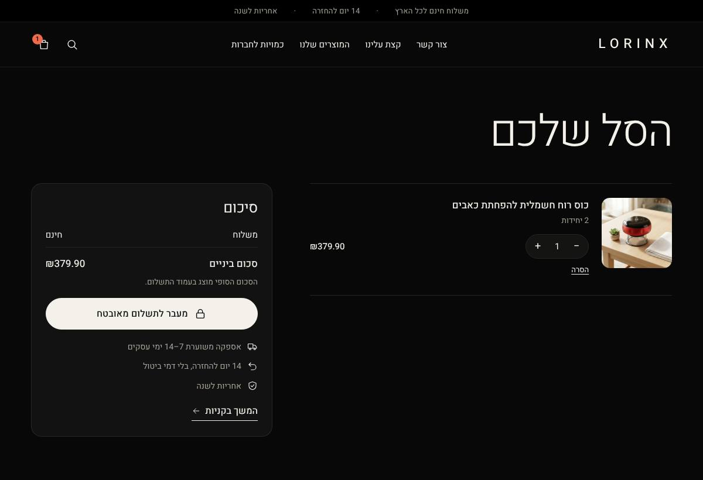
צילום מהטיוטה · cart-page.jpg
מה
קיים היום
מוצע
סטטוס
מתחת לכפתור
אספקה משוערת 7–14 ימי עסקים 14 יום להחזרה, בלי דמי ביטול אחריות לשנה
מגיע עד [תאריך] 14 יום להחזרה, משלוח ההחזרה עלינו
מחכה לנתון
ליד הכפתור
—
סמלי אמצעי התשלום, ו"עד [X] תשלומים" אם יש
מחכה לנתון
למה מתחרה ישיר (Goodest) מציג "4 x ₪49" על מוצר של ₪198.
קצת עלינו
העמוד כתוב היטב ואין בו אף עובדה שאפשר לבדוק: לא מי, לא מאיפה, לא ממתי.
A1
פתיחה
עדיפות: גבוה
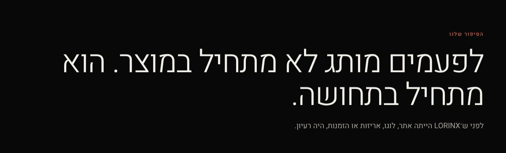
צילום מהטיוטה · a-top.jpg
מה
קיים היום
מוצע
סטטוס
כותרת
לפעמים מותג לא מתחיל במוצר. הוא מתחיל בתחושה.
ללא שינוי
נשאר
משפט
לפני ש־LORINX הייתה אתר, לוגו, אריזות או הזמנות, היה רעיון.
מי עומד מאחורי LORINX אני [שם], ואני מפעיל את LORINX מ[עיר] מאז [שנה]. [משפט אחד אמיתי על איך הגעתי לזה].
מחכה לנתון
למה גולש שלא מכיר את החנות מחפש כאן אדם.
A2
הרעיון וארבע השאלות
עדיפות: בינוני
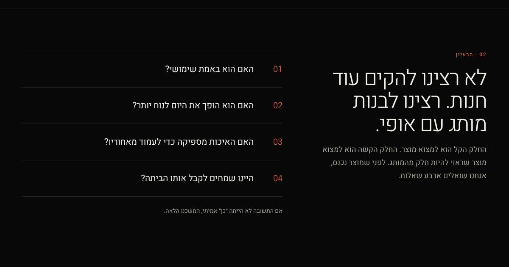
צילום מהטיוטה · a-idea.jpg
מה
קיים היום
מוצע
סטטוס
כותרת
לא רצינו להקים עוד חנות. רצינו לבנות מותג עם אופי.
איך אני בוחר מכשיר
מחליפים
ארבע השאלות
האם הוא באמת שימושי? · האם הוא הופך את היום לנוח יותר? · האם האיכות מספיקה כדי לעמוד מאחוריו? · היינו שמחים לקבל אותו הביתה?
ללא שינוי, בתוספת משפט אחד: [מה נבדק בפועל לפני שמוצר נכנס]
מחכה לנתון
מקטע חדש
—
מה אני מוכר, ומה לא ארבעה מכשירים לבית. הם אינם מכשירים רפואיים. הם נותנים חום, שאיבה ועיסוי, לרבע שעה של שקט בסוף היום.
מוסיפים
למה ארבע השאלות הן רעיון טוב שנשאר מופשט. משפט אחד על מה שנבדק בפועל הופך אותו לעובדה.
לפני שמיישמים
"שנים של עבודה, ניסיון והיכרות עם עולם המוצרים": להחליף בעובדה, או להוריד.
A3
אמון וסיום
עדיפות: גבוה
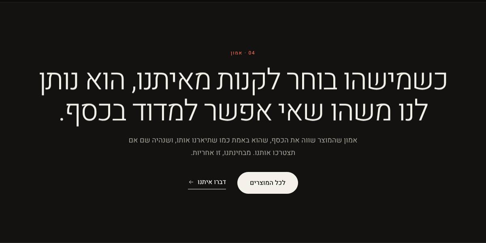
צילום מהטיוטה · a-trust.jpg
מה
קיים היום
מוצע
סטטוס
טקסט
אמון שהמוצר שווה את הכסף, שהוא באמת כמו שתיארנו אותו, ושנהיה שם אם תצטרכו אותנו. מבחינתנו, זו אחריות.
מה חשוב לדעת לפני שמזמינים המכשירים נשלחים אליכם מחו"ל, ולכן המשלוח לוקח [טווח אמיתי]. יש 14 יום להחזרה, ומשלוח ההחזרה עליי. תקלה בשנה הראשונה: תיקון או החלפה.
מחכה לנתון
מקטע חדש
—
איך מדברים איתי ווטסאפ [מספר], מייל [כתובת], א׳–ה׳ 09:00–18:00. אני קורא כל הודעה.
מוסיפים
כותרת דפדפן
קצת עלינו – LORINX
מי אנחנו: הסיפור והשירות של LORINX
מחליפים
למה עמוד שאומר מיוזמתו מאיפה המשלוח יוצא ומה קורה כשמשהו לא עובד עונה על השאלות שהגולש בא איתן.
לפני שמיישמים
כל העמוד בגוף אחד. אם בוחרים "אני", אז לאורך כל העמוד.
צרו קשר וכמויות לחברות
C1
צרו קשר
עדיפות: נמוך
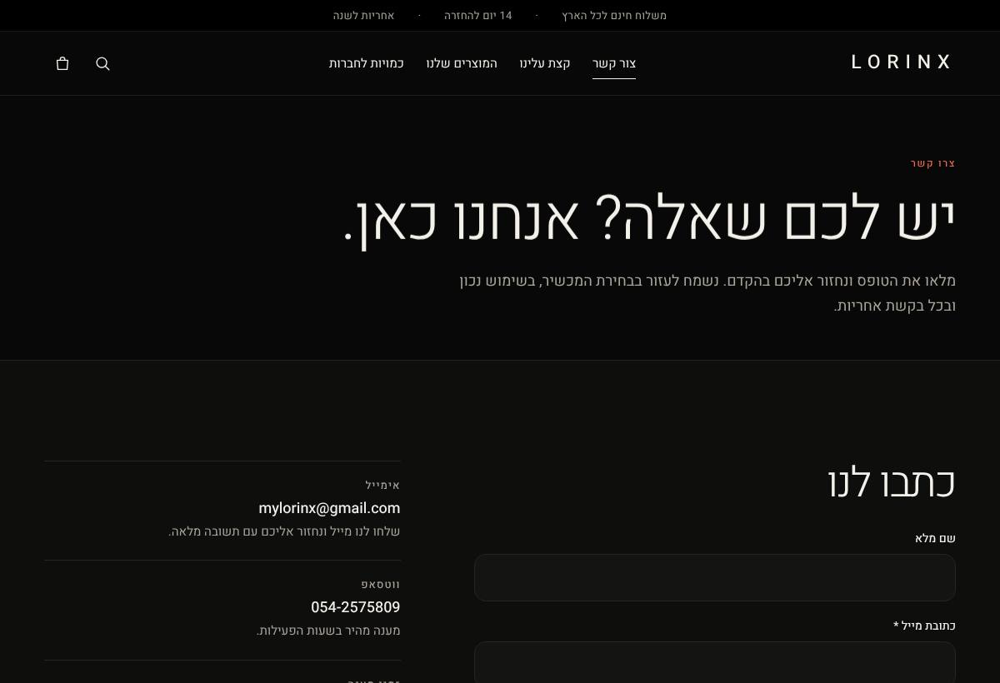
צילום מהטיוטה · c-main.jpg
מה
קיים היום
מוצע
סטטוס
כותרת ומשפט
יש לכם שאלה? אנחנו כאן. מלאו את הטופס ונחזור אליכם בהקדם. נשמח לעזור בבחירת המכשיר, בשימוש נכון ובכל בקשת אחריות.
ללא שינוי
נשאר
ווטסאפ
מענה מהיר בשעות הפעילות.
עונים בדרך כלל תוך [זמן אמיתי].
מחכה לנתון
אימייל
mylorinx@gmail.com
כתובת בדומיין החנות, אם אפשר
מחכה לנתון
טלפון
מספר אחד (בעמוד "פרטי התקשרות" ובתקנון: שניים)
אותם מספרים בכל מקום
מחליפים
למה "מענה מהיר" מול "1–3 ימי עסקים" בתקנון ובעמוד פרטי ההתקשרות. צריך התחייבות אחת שעומדים בה.
B1
כמויות לחברות
עדיפות: בינוני
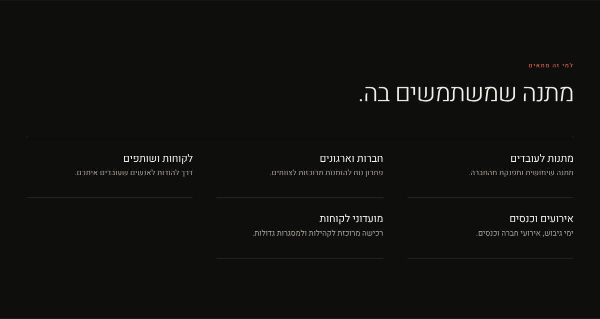
צילום מהטיוטה · b-who.jpg
מה
קיים היום
מוצע
סטטוס
כותרת ופתיחה
הזמנות בכמויות גדולות לעסקים. מחפשים מתנה איכותית ושימושית לעובדים, ללקוחות או לשותפים עסקיים? נבנה לכם הצעה מותאמת, כולל מיתוג ואספקה מרוכזת.
ללא שינוי, אחרי אימות ש"מיתוג" אכן אפשרי
מחכה לנתון
ארבע קוביות
מחירים מיוחדים · שירות אישי · הזמנה מרוכזת · התאמה לכמות
מ-[X] יחידות · הצעת מחיר תוך [זמן] · אספקה תוך [זמן] · מיתוג מ-[X] יחידות
מחכה לנתון
למה ארבע הקוביות אומרות אותו דבר. לקוח עסקי רוצה לדעת מינימום, זמן ומחיר.
לפני שמיישמים
העסק רשום כעוסק פטור, שאינו מוציא חשבונית מס. לבדוק עם רואה חשבון לפני שמקדמים את העמוד ללקוחות עסקיים.
קולקציות וניווט
ארבעה מוצרים מוצגים היום בחמש כתובות שונות, ויש שאריות באנגלית.
N1
קולקציה בשם "Home page"
עדיפות: בינוני
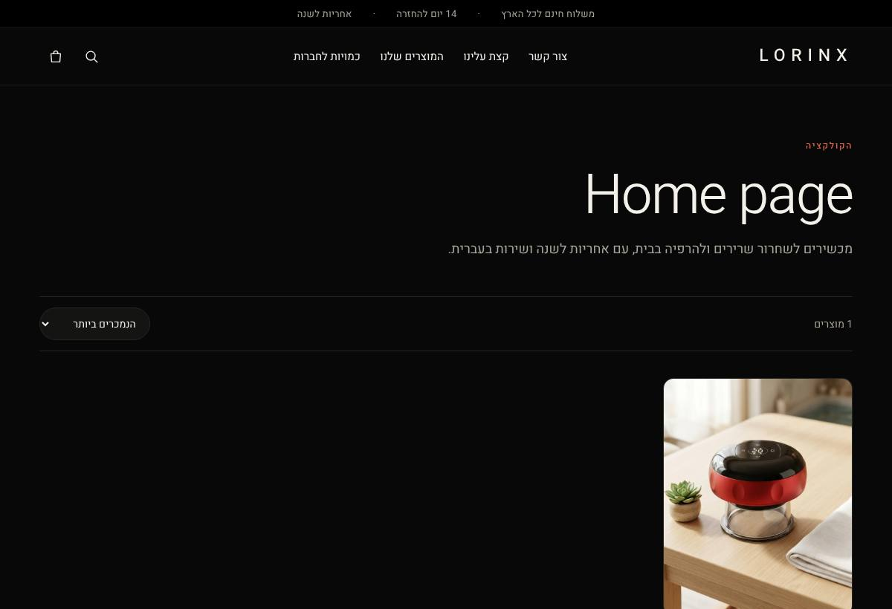
צילום מהטיוטה · col-front.jpg
מה
קיים היום
מוצע
סטטוס
שם
Home page
להסתיר, או לשנות ל"המוצר המוביל"
מחליפים
למה שם ברירת מחדל של Shopify שנשאר גלוי, עם מוצר אחד.
N2
קולקציית האקדח
עדיפות: בינוני
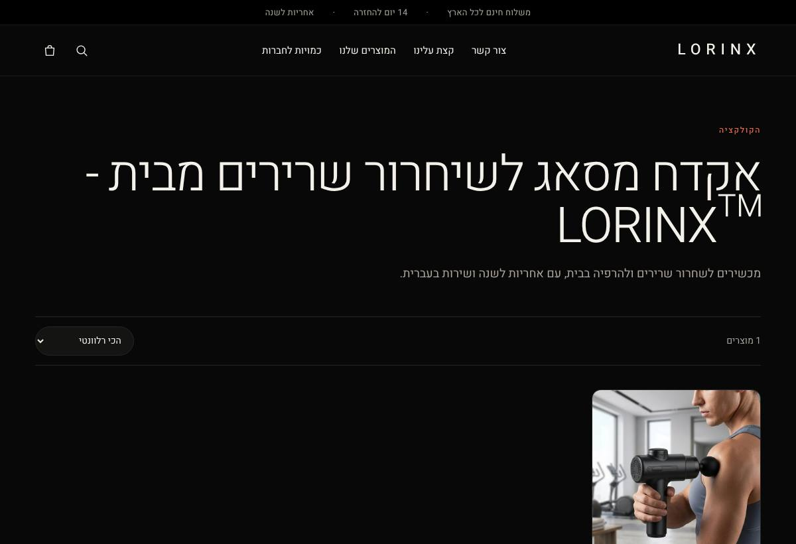
צילום מהטיוטה · col-gun.jpg
מה
קיים היום
מוצע
סטטוס
שם
אקדח מסאג לשיחרור שרירים מבית - ™LORINX
להסתיר ולהפנות לעמוד המוצר
מורידים
למה שגיאת כתיב ("לשיחרור"), ומוצר אחד בלבד.
N3
קולקציה ראשית
עדיפות: בינוני
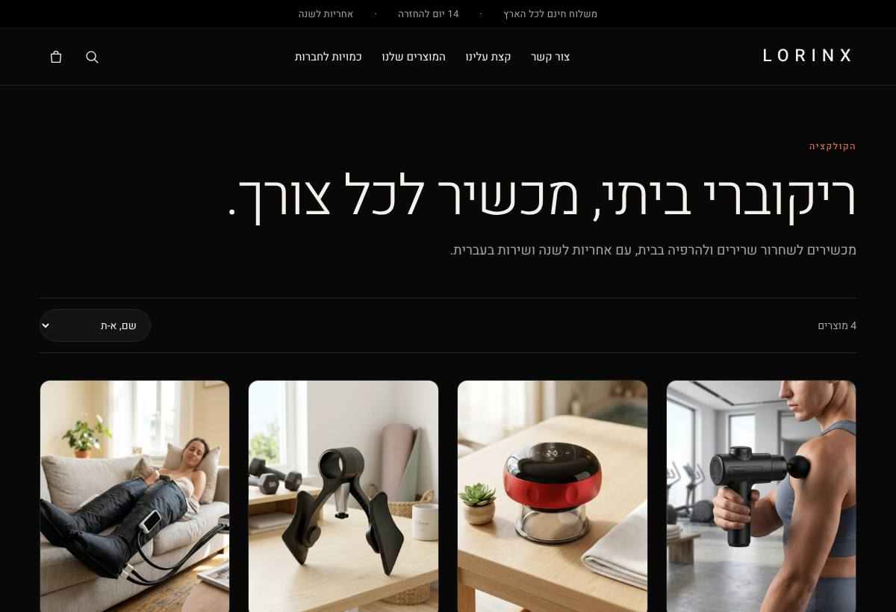
צילום מהטיוטה · col-all.jpg
מה
קיים היום
מוצע
סטטוס
כותרת
ריקוברי ביתי, מכשיר לכל צורך.
ארבעה מכשירים, ואיך בוחרים ביניהם
מחליפים
משפט
מכשירים לשחרור שרירים ולהרפיה בבית, עם אחריות לשנה ושירות בעברית.
כל מכשיר מוסבר בעברית: מה הוא עושה, מה מרגישים, ולמי הוא לא מתאים. בלי להבטיח תוצאה.
מחליפים
סידור הכרטיסים
לפי ברירת מחדל: "פופולריות"
סדר קבוע: כוס רוח, אקדח, רגליים, ירכיים (או לפי נתוני המכירות)
מחליפים
כפילות
אותם מוצרים גם ב"המוצרים שלנו" (עמוד) וגם בקולקציה "המוצרים שלנו"
כתובת אחת, והשאר מפנות אליה
מחליפים
למה חמש כתובות לאותם ארבעה מוצרים מבלבלות גם את הגולש וגם את גוגל. באתר כללי, הקולקציה הראשית היא העמוד המסחרי המרכזי, ולכן היא צריכה להסביר איך בוחרים.
N4
הבלוג
עדיפות: נמוך
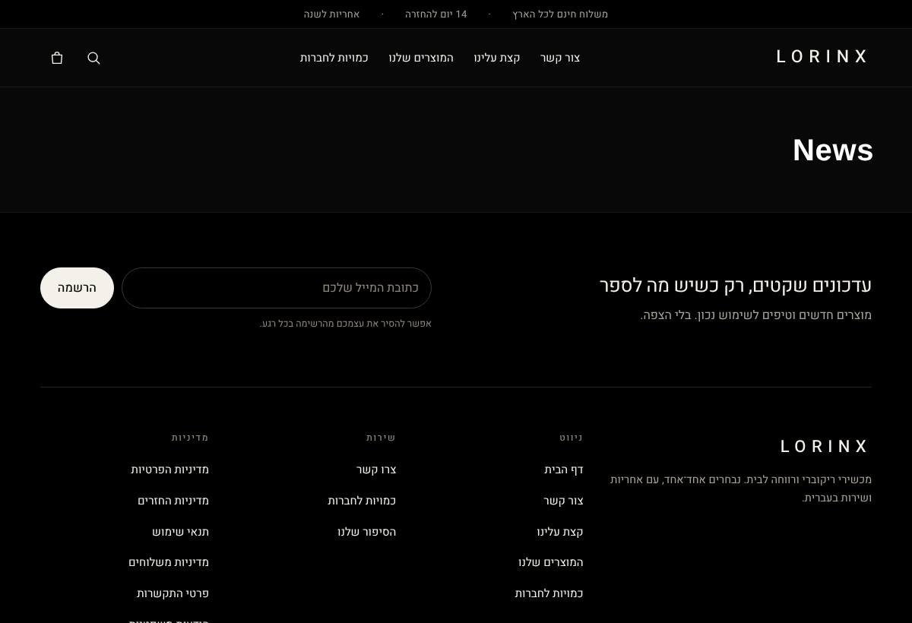
צילום מהטיוטה · blog.jpg
מה
קיים היום
מוצע
סטטוס
שם ותוכן
News · ריק
להסתיר עד שיש מאמר ראשון. אחר כך: "המדריך של LORINX"
מחליפים
למה עמוד ריק באנגלית.
מדיניות
עמודי המדיניות כתובים בשפה משפטית, בניגוד לשאר האתר. הנוסח המשפטי נשאר. מוסיפים רק סיכום קצר ומיישרים סתירות.
M1
מדיניות משלוחים
עדיפות: גבוה
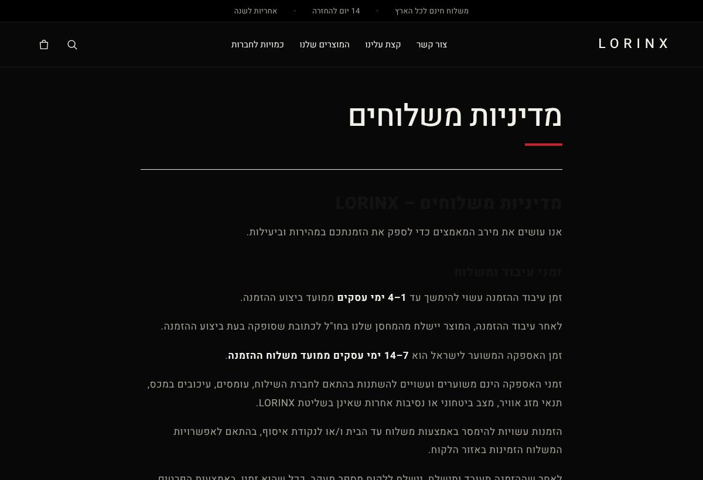
צילום מהטיוטה · pol-ship.jpg
מה
קיים היום
מוצע
סטטוס
ראש העמוד
אנו עושים את מירב המאמצים כדי לספק את הזמנתכם במהירות וביעילות.
בקיצור: המשלוח חינם. ההזמנה יוצאת מהמחסן בחו"ל תוך עד 4 ימי עסקים, ומגיעה 7–14 ימי עסקים אחר כך. מספר מעקב נשלח במייל.
מוסיפים
"מהמחסן שלנו בחו"ל"
המוצר יישלח מהמחסן שלנו בחו"ל
מהמחסן בחו"ל
מחליפים
מיסים ומכס
ככל שיחולו על ההזמנה מיסי יבוא, מכס, מע"מ או עמלות אחרות… LORINX אינה יכולה להתחייב מראש
[נוסח אחרי שמבררים מי משלם]
מחכה לנתון
למה הסעיף על מיסים משאיר פתח לחיוב הלקוח, מול "משלוח חינם" ומול "מחירי המוצרים הם מחירים סופיים" בתקנון. אם המחסן הוא של ספק, "שלנו" אינו מדויק.
לפני שמיישמים
שלוש שאלות: מה הספק מצהיר על החבילה, האם לקוח חויב אי־פעם במס או בעמלה בקבלה, ומי סופג אם כן.
M2
סתירות בין עמודי המדיניות
עדיפות: בינוני
מה
קיים היום
מוצע
סטטוס
החלפת מוצר
מדיניות החזרים: "LORINX אינה מציעה החלפת מוצר". פרטי התקשרות: "החזרה, החלפה או כל עניין אחר"
נוסח אחד בשני העמודים
מחליפים
זמן תגובה
צרו קשר: "מענה מהיר". תקנון ופרטי התקשרות: "1–3 ימי עסקים"
התחייבות אחת
מחליפים
תחילת האחריות
תקנון: "ממועד רכישת המוצר"
להחליט: מהרכישה או מהקבלה
מחכה לנתון
משלוח לתיקון באחריות
תקנון: "עלות משלוח המוצר לבדיקה תיקבע בהתאם למקרה"
להחליט מי משלם, ולכתוב
מחכה לנתון
הודעות משפטיות
פסקה אחת, בלי פרטי העסק
להוסיף את שם העסק והכתובת שכתובים בתקנון
מוסיפים
למה כשההבטחות באתר ובמדיניות לא זהות, הלקוח מקבל שתי תשובות לאותה שאלה.
מה נשאר בלי שינוי
דברים שבדקתי ואני ממליץ לא לגעת בהם.
הכותרת הראשית "כל אימון נגמר ברגע של שחרור." וסרטון הרצים.
המקטע "מתי משתמשים" בעמוד כוס הרוח ("בבוקר, על הגב התחתון…", "אחרי יום מול המחשב, על הכתפיים, מול הטלוויזיה"). בדף הבית הוא עובר לנוסח כללי (H5).
עמוד כוס הרוח: המשפט "ואקום שמושך וחום שמרפה" (עם תוספת האזור) ושאר המבנה שלו.
רשימות "כדאי / להימנע" בכל ארבעת המוצרים.
ההסתייגות "המוצר מיועד לרווחה כללית ואינו תחליף לייעוץ או לטיפול רפואי".
הפס העליון: "משלוח חינם לכל הארץ · 14 יום להחזרה · אחריות לשנה".
המסמך עוסק בטיוטה בלבד. בזמן ההשוואה לאתר החי ראיתי שני דברים שלא קיימים בטיוטה, ואני מציין אותם כדי שתדע. לא נגעתי באתר החי.
באתר החי מוצג "4.9 · 46+ ביקורות מאומתות" עם שש ביקורות בשמות כלליים. לפי Shopify נרשמו בחנות 17 הזמנות בסך הכול. בטיוטה הדירוג והביקורות האלה כבר לא מופיעים.
בדף הבית החי כתוב "הזמינו עכשיו · ₪237.90", ועמוד המוצר גובה ₪240.13. בטיוטה המחיר אחיד: ₪240.13.
מקורות למספרים במסמך: נתוני מכירות וכניסות מ-Shopify (נבדקו 19.11.2026); מחירי מתחרים מהעמודים שלהם, שנפתחו ישירות באותו יום (Goodest, Velarixs, Bug, Zap). המחקר המלא נמצא בתיקייה docs/copy-research בענף claude/kind-ride-7pzs23.